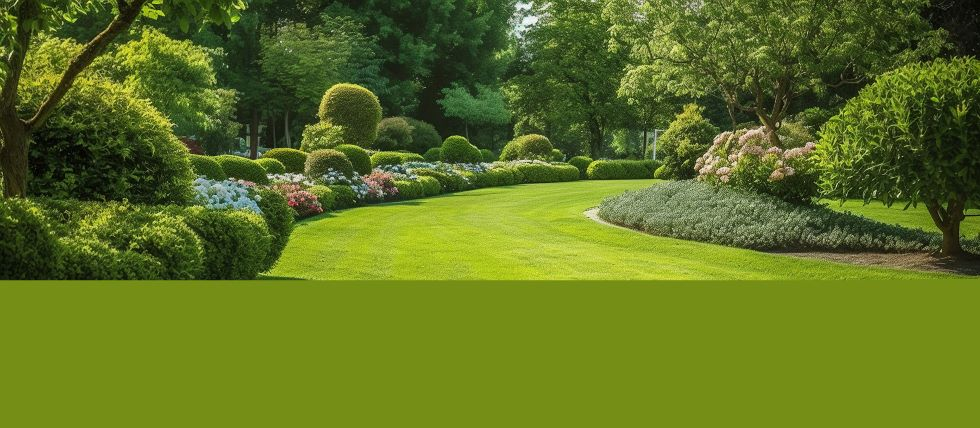
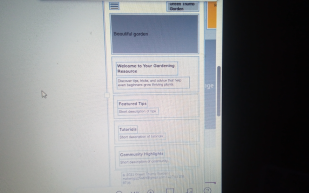
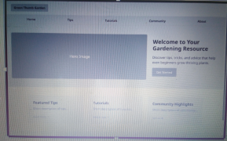

Welcome to Your Gardening Resource

Discover tips, tricks, and advice that help even beginners grow thriving plants.
Site Name
Green Thumb Garden is the chosen site name because it represents the goal of helping users develop their gardening skills — turning them into green thumbs who can nurture beautiful, thriving plants. The name is memorable, relevant to gardening enthusiasts, and easily brandable with a logo featuring a green thumb icon or leaf motif.
Site Purpose
The purpose of Green Thumb Garden is to provide comprehensive gardening resources including expert tips, step-by-step tutorials, seasonal planting guides, and advice catering to gardeners of all skill levels. The site aims to inspire confidence in beginners while offering advanced techniques for experienced gardeners. Additionally, it serves as a community hub where visitors can ask questions, share success stories, and access helpful product recommendations.
Visitor Scenarios
- Scenario 1: "I am new to gardening and want to know what plants are best for beginners in my climate. Where can I find this information?"
- Answer: You can visit our “Tips” page, where we have beginner-friendly guides tailored by climate zones to help you select easy-to-grow plants that thrive locally.
- Scenario 2: "I want to learn how to compost at home to reduce waste and improve my garden soil. Does this site offer guidance on composting?"
- Answer: Yes, our “Tips” section includes detailed tutorials on home composting methods, suitable materials, troubleshooting tips, and how to use compost effectively in your garden.
Typography
We have selected the following fonts for the site to enhance readability and aesthetic appeal:
- Montserrat Used for all headings (h1, h2, h3) to provide a clean, modern look with good readability.
- Roboto Applied to body text and paragraphs for its excellent legibility on screens.
- Pacifico Reserved for the logo text and special callout sections to add a friendly and inviting feel.
Wireframe
Mobile View

This wireframe shows a simplified vertical layout optimized for small screens with a hamburger menu, logo at the top, a main image/banner, followed by content sections stacked vertically for easy scrolling.
Desktop/Tablet View

The desktop wireframe features a horizontal navigation bar at the top, a larger hero image beside the welcome text, and multiple columns below for featured tips, tutorials, and community highlights ensuring efficient use of wider screen space.